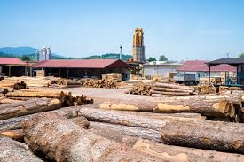
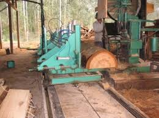

A Madeireira Canelão é uma empresa familiar localizada em Itaperuçu, bairro Campo Grande, na Rua Antônio stocherro, 700 que trabalha com dedicação e compromisso para oferecer o melhor em madeiras de pinus e eucalipto.
Atendemos obras, reformas e projetos personalizados, sempre prezando pela qualidade, resistência e bom atendimento.Temos uma grande variedade de produtos, como tábuas, vigas, ripas, caibros e madeiras tratadas, prontos para o que você precisar.
Além disso, realizamos entregas rápidas e seguras, levando nossos produtos até sua casa ou obra com todo o cuidado que você merece.
Na Madeireira Canelão, trabalhamos com honestidade, preços justos e muito orgulho do que fazemos. Aqui, cada cliente é tratado com respeito e cada pedido é feito com atenção e carinho.Veja nossos trabalhos:
Acompanhe nossas fotos:
 